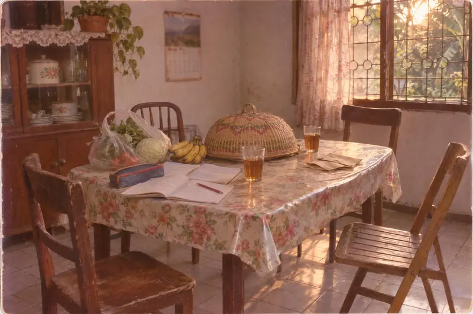

Berobat
Kalau ada yang sakit
Biaya rumah sakit sering datang tanpa aba-aba. Biasanya saya mulai dengan melihat perlindungan yang sudah kamu punya, misalnya dari kantor atau BPJS, lalu kita cari tahu bagian mana yang masih harus kamu bayar sendiri.

itu saya
Kalau kita janjian di kedai kopi, biasanya saya sudah datang dua puluh menit lebih awal dan duduk di kursi dekat jendela, ditemani es kopi susu dan buku catatan. Jadi kalau kamu masuk dan melihat perempuan yang sedang menulis sambil sesekali melirik ke pintu, kemungkinan besar itu saya.
Saya agen asuransi dan konsultan keuangan keluarga di Jakarta. Sebelum bercerita soal pekerjaan, saya mau cerita dulu kenapa saya memilihnya, karena alasannya ada di meja makan rumah kami dulu.
Waktu saya kecil, meja makan di rumah kami dipakai untuk apa saja. Saya mengerjakan PR di salah satu ujungnya, dan belanjaan dari pasar sering masih tergeletak di tengah karena belum sempat dibereskan.
Setiap awal bulan, Ibu duduk di meja itu dan membagi gaji Bapak ke dalam amplop-amplop cokelat. Ada amplop Sekolah, Listrik, Belanja, dan Arisan, lalu yang terakhir selalu amplop bertuliskan Jaga-jaga.
Isi amplop Jaga-jaga selalu paling sedikit, dan anehnya amplop itulah yang paling sering dibuka. Uangnya terpakai waktu ban motor Bapak bocor, waktu tetangga punya hajatan, dan waktu saya demam tengah malam sampai harus dibawa ke dokter.
Saya masih ingat wajah Ibu setiap kali amplop itu ternyata masih ada isinya. Ibu kelihatan lega, dan seisi rumah ikut tenang.


Wajah lega itu yang akhirnya membawa saya ke pekerjaan ini. Sekarang saya membantu keluarga lain menyiapkan amplop Jaga-jaga mereka sendiri, supaya isinya masih cukup waktu ada keperluan mendadak.
Hari ini amplopnya sudah berganti menjadi rekening dan polis, sementara kebutuhannya masih sama dengan di rumah kami dulu. Ada empat hal yang paling sering membuat keluarga kewalahan kalau harus ditanggung sendirian, dan keempatnya itulah yang saya bantu siapkan.
Berobat
Biaya rumah sakit sering datang tanpa aba-aba. Biasanya saya mulai dengan melihat perlindungan yang sudah kamu punya, misalnya dari kantor atau BPJS, lalu kita cari tahu bagian mana yang masih harus kamu bayar sendiri.
Penghasilan
Kalau pencari nafkah sakit berkepanjangan atau meninggal dunia, cicilan dan kebutuhan sehari-hari tetap berjalan. Kita hitung bersama berapa lama keluargamu bisa bertahan dengan tabungan yang ada, lalu kita siapkan pengganti penghasilan untuk sisanya.
Sekolah
Uang pangkal biasanya datang lebih cepat dari perkiraan. Saya akan bertanya umur anakmu dan sekolah seperti apa yang kalian bayangkan, supaya kita tahu berapa yang perlu disisihkan mulai sekarang.
Jaga-jaga
Dari keempatnya, inilah yang paling mirip amplop Ibu. Isinya untuk ban bocor dan keperluan mendadak lain yang tidak bisa menunggu gajian. Saya bantu menentukan jumlah yang masuk akal dan tempat menyimpannya, supaya uang ini tidak ikut terpakai untuk belanja.
Pertemuan pertama juga tidak selalu berakhir dengan produk. Kadang hasilnya hanya daftar hal yang perlu dirapikan dulu, dan buat saya itu sudah langkah yang bagus.
Apa pun yang ingin kamu bahas, saya hampir selalu membuka pertemuan pertama dengan tiga pertanyaan ini. Coba jawab sekarang, lalu lihat apa yang akan saya catat untukmu. Jawabanmu tidak disimpan di mana pun.
Pertemuan pertama hanya untuk ngobrol dan bertanya, bisa di kedai kopi atau di meja makanmu sendiri. Kamu tidak harus membeli apa pun, dan saya tidak akan menagih keputusan setelahnya.


Ceritakan sedikit tentang keluargamu dan apa yang sedang kamu pikirkan. Saya akan membalas dengan beberapa pertanyaan dulu, supaya saran saya nanti benar-benar sesuai dengan keadaanmu.